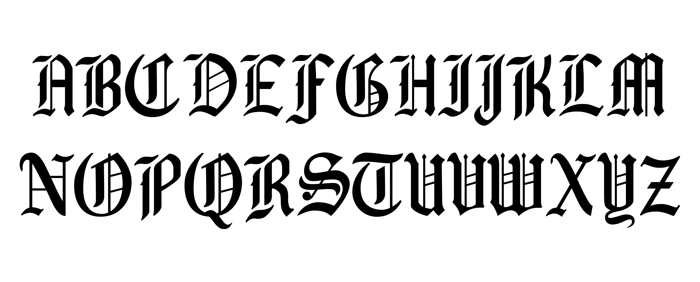
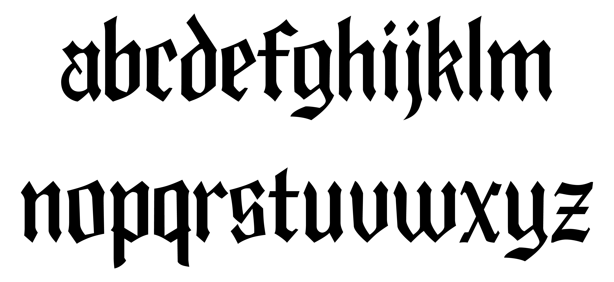

Typeface
I created a typeface under the direction of renowned type designer Ben Kiel of XYZ Type. It is a blackletter display font called Fadriar.
 Process
The origins of blackletter script can be traced to the Gutenberg Bible. My university has a leaf of the Gutenberg Bible in their Special Collections.
In my research, I learned that people grew tired of the Gutenberg Bible's poor legibility, whicht woud later inspire the first serif typeface. As you can see, this text has a lovely uniformity and rhythm, but it's quite difficult to read.
There are many blackletter typefaces out there, but I focused on ATF's blackletter typefaces. There are three that I am aware of: Engravers Old English, Cloister Black, and American Text. Each of these takes a slightly different approach, and they provide a nice variety of choice.
Although I took inspiration from all three, I decided to focus of reviving Engravers Old English. It felt almost like a middle ground between Cloister and American, and I liked the more square and rigid shapes combined with more traditional ornamentation.
Because Engravers was not a digital typeface, I only had the original specimen to start with. I began my process by tracing vectors of the scanned specimen. This was important to my process because I needed a higher quality rendering to use as a template for my revival.
I did a lot of experimentation with the parallel pen, trying to mimick Engravers as well as other blackletters for inspiration.
There were certain individual letters that I consistently had problems with. Some of the caps seemed to veer away from the geometry of the others. An example of this is B, K, and R. They are styled similarly to each other, but different from the other caps.
I hit a roadblock when I realized that some of the caps did not follow the traditional stroke of the parallel pen. This on its own is okay, but there was a clear visual difference that needed to be corrected. This issue was found in D, F, I, and J. I used the pen to sketch several iterations of these letters to get them closer to the rest of the set.